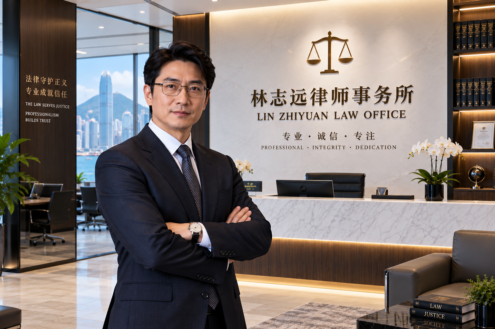
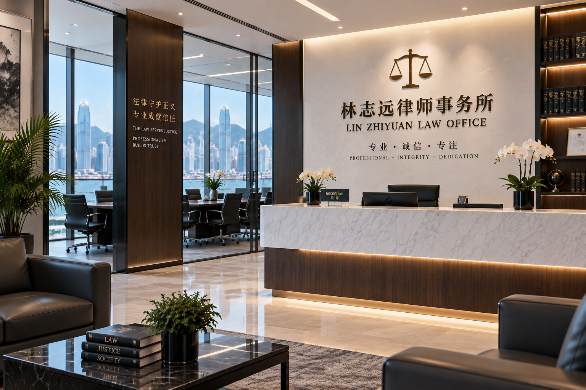
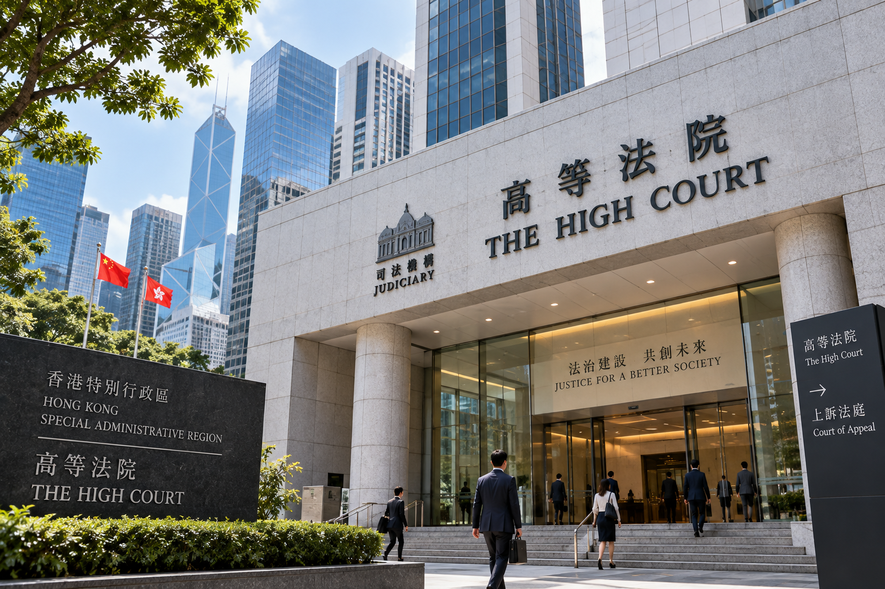

Commercial Law
Supporting businesses for sustainable growth

INTEGRITY | PROFESSIONALISM | YOUR TRUST
Practical, reliable and effective legal advice for individuals, businesses and international clients.
Supporting businesses for sustainable growth
Effective representation in complex matters
Bridging legal solutions across jurisdictions
Practical advice for individuals and investors
Wills, succession and wealth planning
ABOUT US
Lin Zhiyuan Law Office provides clear, practical and effective legal advice. We work closely with clients to understand their needs and deliver solutions with integrity, professionalism and a client-focused approach.
Learn More →
OUR PRACTICE
Focused advice, careful preparation and practical solutions.
Commercial agreements, corporate matters and business-focused legal advice.
Strategic advice and representation for civil and commercial disputes.
Legal support for matters involving Hong Kong and international jurisdictions.
Practical guidance on property transactions, leases and related matters.
Personal legal advice covering succession, wills and private affairs.
Confidential, clear advice tailored to the circumstances of each client.
QUALIFICATIONS
A commitment to high professional standards, supported by legal education and progressive experience.
Hong Kong Metropolitan University
Hong Kong Metropolitan University
The University of Hong Kong
TESTIMONIALS
Client feedback — placeholder testimonials for the current website version.
“Excellent service and very professional. Lin Zhiyuan explained everything clearly and handled my case with great attention to detail.”
“Very knowledgeable, responsive, and professional. I always felt my case was in capable hands.”
“Lin Zhiyuan was clear, patient, and highly professional throughout the process. I’m very satisfied with the service.”
“Outstanding legal support. Everything was handled efficiently and with great professionalism.”
“Professional, reliable, and easy to communicate with. I would confidently recommend Lin Zhiyuan.”
“Excellent attention to detail and very clear legal advice. A genuinely professional experience.”

HONG KONG
The office is presented as being conveniently located in Admiralty, near Hong Kong’s High Court.
The court image is illustrative and is not the office address.
CONTACT US
Contact us for a confidential discussion about your legal needs.
💬 WhatsApp
+1 (581) 602-7898
✉ Email
linzhiyuan242@gmail.com
⌖ Office Address
Suite 1808, 18/F, Two Pacific Place
88 Queensway, Admiralty, Hong Kong
Address shown as a temporary/sample office detail and to be replaced with verified final information.